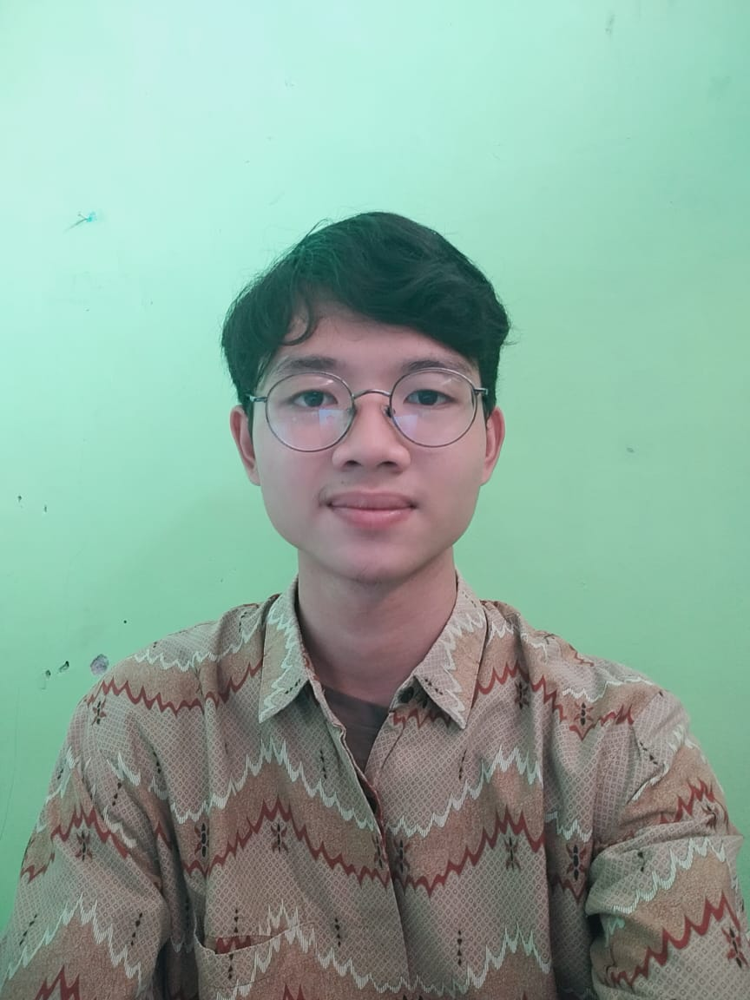

MY CURRICULUM VITAE
Biodata Diri
- Nama :Muhamad Rahul Sayyid
- Tempat tanggal lahir :Tangerang,28 Maret 2003
- Email :11muhamadrahul@gmail.com
- Jenis kelamin :Laki-laki
- Agama :Islam
- Alamat :Perum Gria Bunga Asri Blok LL No.4 Rt.07/07 Cogreg,Kec.Parung,Kab.Bogor
- Status :Mahasiswa
- Hobi :Main musik dan membaca
- Kebangsaan :Indonesia
- No.Handphone :083891511829
Biodata Pendidikan
- SD :SDN Cibadung 03
- SMP :SMPN 1 Gunung Sindur
- SMA :SMA Islam Al-Ghozali
- S1 :Sistem Informasi,STT Terpadu Nurul Fikri
Pengalaman
- SD :Sering mengikuti berbagai macam lomba tingkat kecamatan.
- SMP :Aktif organisasi OSIS dan juga sering mengikuti kegiatan-kegiatan antar sekolah.
- SMA :Aktif berorganisasi kepondok pesantrenan(OPPMA) dan menjadi bagian Tamir Masjid serta sering mengikuti lomba-lomba sains.
